【笔记】计算机组成 (Part II)
Chapter 2. Instructions: Language of the Machine
Introduction
-
Process of Compiling
编译过程：高级编程语言 $\to$ 汇编语言 $\to$ 机器语言。
例如，
A + B$\to$add A, B$\to$1000110010100000。 -
Instruction
指令是「机器的语言」。如果说 Instruction 是 Word，那么 Instruction set 则是 Vocabulary。
本课程采取的指令集为 RISC-V。这是一种精简指令集。
关于汇编语言和指令集的关系，摘取两条知乎回答：
汇编语言是用人类看得懂的语言来描述指令集。否则指令集的机器码都是一堆二进制数字，人类读起来非常麻烦，但汇编是用类似人类语言的方式描述指令集，读起来方便多了。
汇编指令是让人看得懂的，只是指令集的另外一种表示形式。
-
RISC vs. CISC
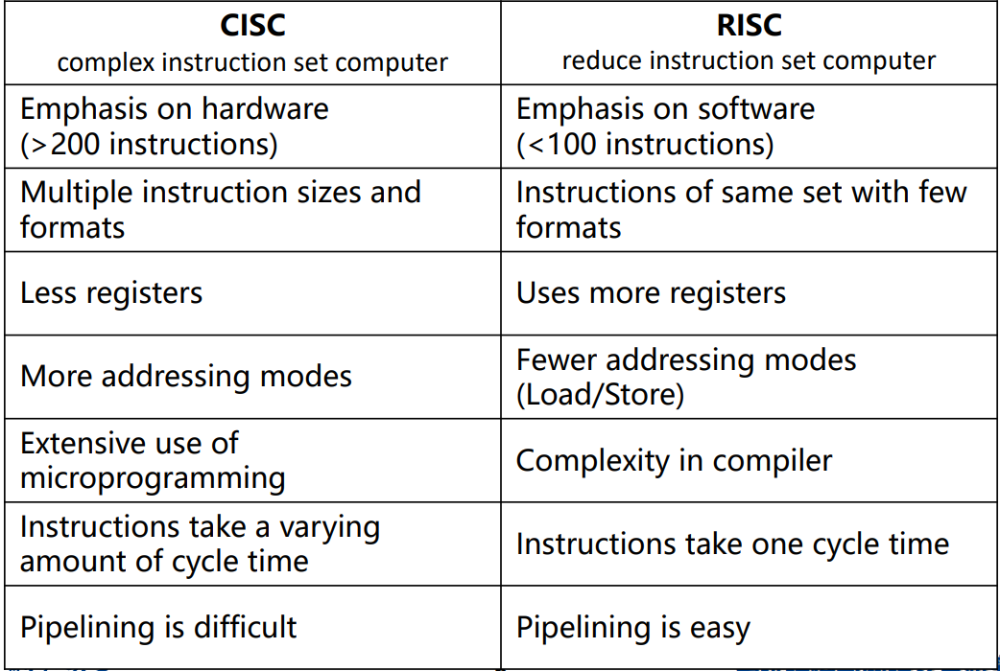
Basics: Instructions and Registers
-
Instruction Formats
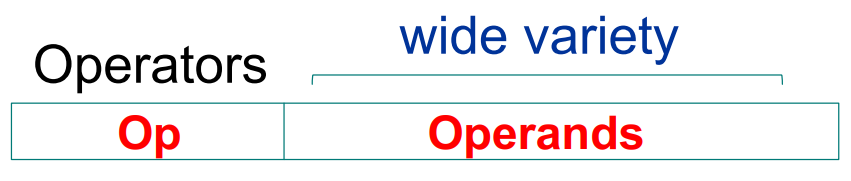
前者是可以理解为操作类型，后者可以理解为操作参数。
-
Register Operands
对于 RISC-V 指令集，其使用的寄存器类型为 $32\times 64\text{-bit}$。可以想象成一个寄存器有 32 行，每一行有一个变量，其长度为 64 bits（等于 8 bytes，是一个 double / long long 的大小，也被称为 dword）。
这些寄存器的「各行」各司其职。其职能如下表所示。
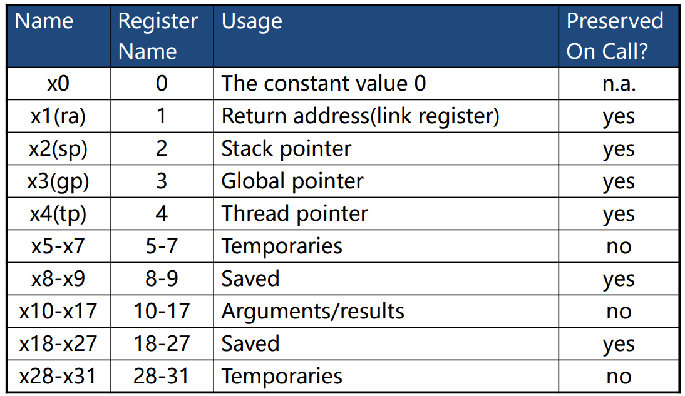
举个例子：
f = (g + h) - (i + j);，我们假设目前 $f,g,h,i,j$ 的值分别位于地址 x19, x20, x21, x22, x23。那么我们应该这样描述 RISC-V 指令：
add x5, x20, x21 add x6, x22, x23 sub x19, x5, x6
AL 1: Arithmetic, Logical and Memory
-
Add and Subtraction
Category Instruction Example Meaning Comments Type Arithmetic add add a,b,c$a \gets b+c$ Always 3 operand R Arithmetic subtract sub a,b,c$a \gets b-c$ Always 3 operand R -
Immediate Arithmetic
Category Instruction Example Meaning Comments Type Arithmetic addi immediate addi a,b,c$a \gets b+c$ $c$ is a constant I -
Logical Arithmetic
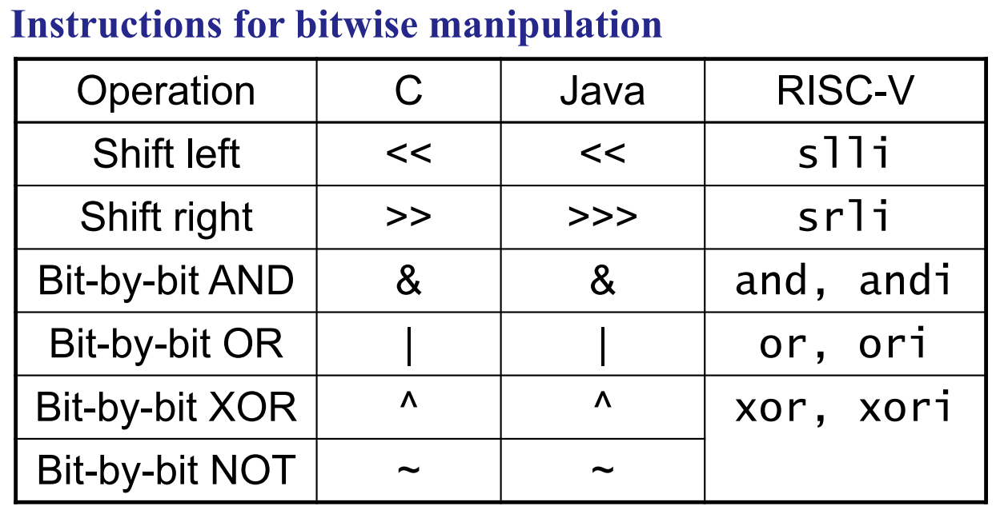
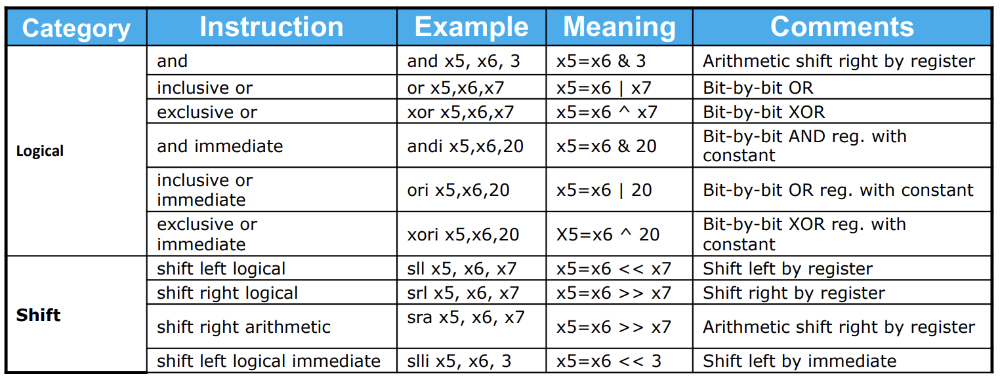
（懒得敲表格了，直接截图）
-
Memory Operations
-
Basics
- 执行算术操作：先从 memory 中读到 reg，在 reg 中进行运算，最后输回到 reg。
- Memory 的地址是 按 byte 定义的。
- RISC-V 采取小端。
-
Example
考虑 C 代码：
1A[12] = h + A[8]; // here A is a double假设 h 在 reg 中的值位于 x21，A 在 memory 中的地址值保存在 reg 中的 x22。
用 RISC-V 表示：
ld x9, 64(x22) add x9, x21, x9 sd x9, 96(x22)- 第一行：由于 A 是 double 类型，所以 A[8] 相对于 A 的偏移为 64。
ld用于从 mem 读到 reg，使用ld x9, 64(x22)将 A 地址向后偏移 64 bytes 处的值读入到 reg 的 x9 中。 - 第二行：执行加法。
- 第三行：将 reg 的 x9 中的值输出到 mem 中。具体位置是 x22 所存地址向后偏移 96。
Category Instruction Example Meaning Comments Type Data Transfer load dword ld x5, 40(x6)x5 = Mem[x6+40] dword from mem to reg I Data Transfer store dword sd x5, 40(x6)Mem[x6+40] = x5 dword from reg to mem S - 第一行：由于 A 是 double 类型，所以 A[8] 相对于 A 的偏移为 64。
-
-
Sign Extension
Example: 8-bit to 16-bit
+2: 0000 0010 => 0000 0000 0000 0010
-2: 1111 1110 => 1111 1111 1111 1110
在 RISC-V 中，
lb操作用于执行「同符号位拓展」，lbu操作用于执行「补 0 位拓展」。
ML 1: Representing Instructions of R / I / S
-
汇编码 $\to$ 机器码
一个例子如下：
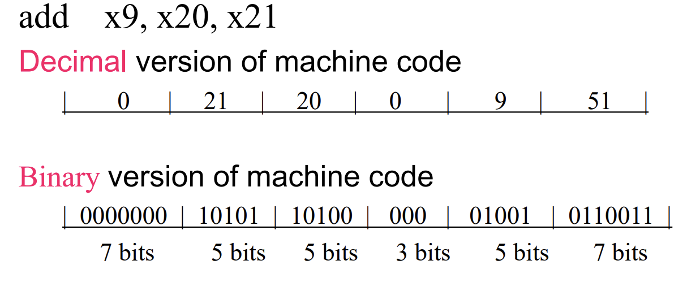
可以看到，汇编码向机器码的转换已经很好理解了。更具体一点，它的规则如下：
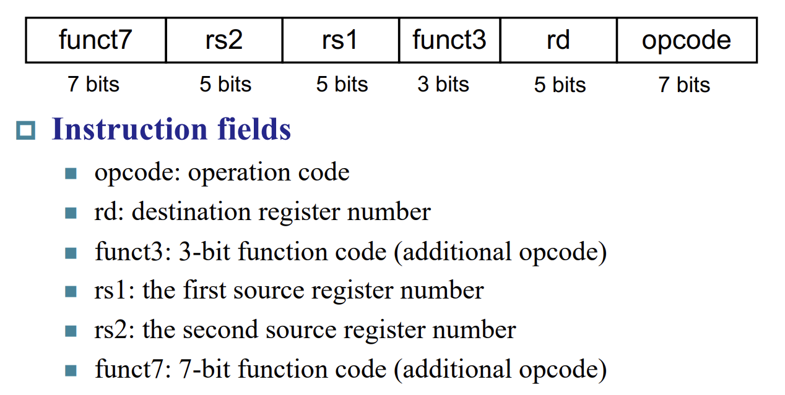
一条指令的长度恒为 32 位。注意构成 operator 的不止有 opcode，还有 funct7 和 funct3。例如，
add和sub的 opcode 实际上是相同的。实际上，这种机器码指令为 R 型指令，他只是众多机器码指令类型中的一种。
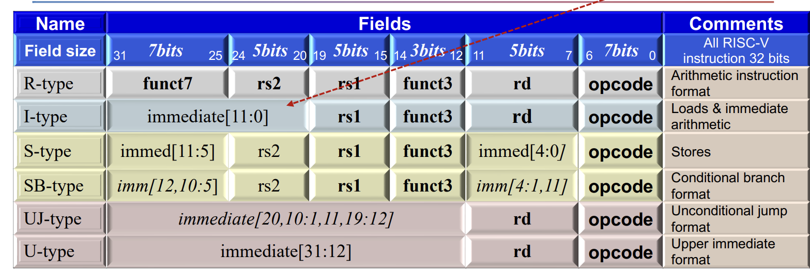
-
R-Format Instructions
主要包含 arithmetic。格式和意义如上所示。
-
I-Format Instructions
主要包含 immediate arithmetic 和 load instructions。
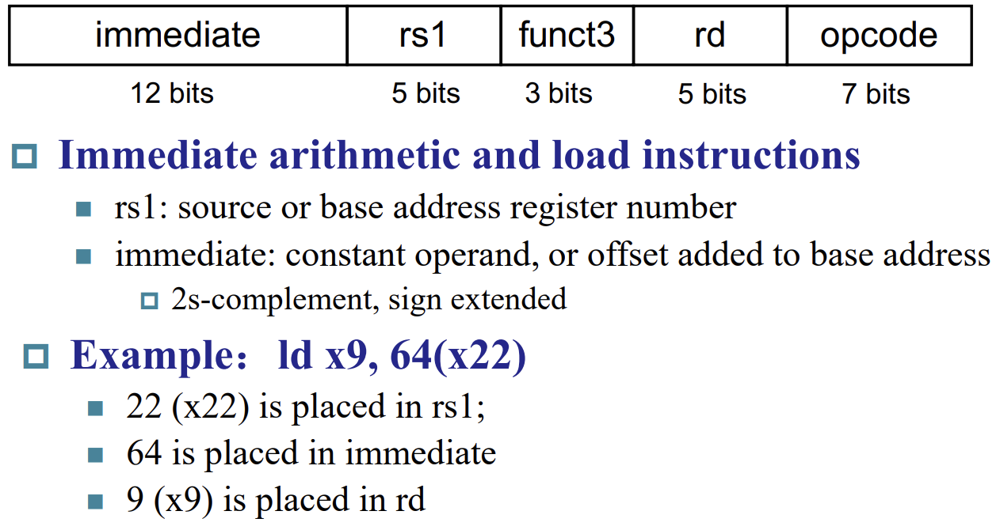
-
S-Format Instructions
主要包含 store instructions。
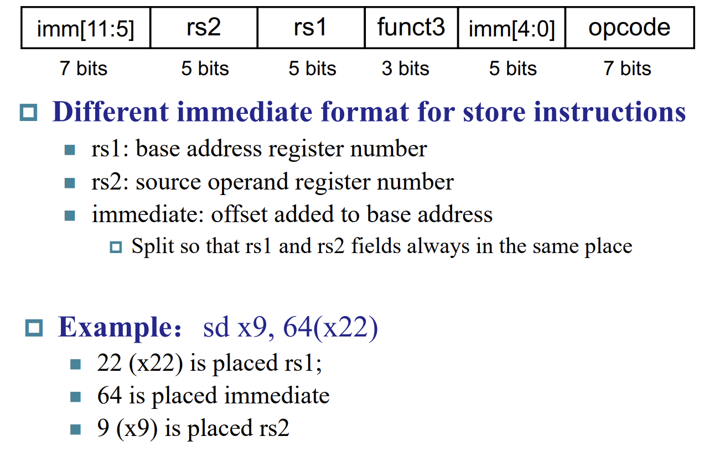
-
AL 2: Decision Instructions
基本 RISC-V 语句：beq & bne
| Category | Instruction | Example | Meaning | Type |
|---|---|---|---|---|
| Decision | equal | beq rs1, rs2, L1 |
if (rs1 == rs2) branch to instruction labeled L1 |
SB |
| Decision | not equal | bne rs1, rs2, L1 |
if (rs1 != rs2) branch to instruction labeled L1 |
SB |
| Decision | less than | blt rs1, rs2, L1 |
if (rs1 < rs2) branch to instruction labeled L1 |
SB |
| Decision | greater than | bge rs1, rs2, L1 |
if (rs1 >= rs2) branch to instruction labeled L1 |
SB |
Unsigned comparison: bltu, bgeu（在后面加 u 变成无符号）
-
单 if 情况
考虑 C 代码：
1if (i == j) goto L1; 2f = g + h; 3L1: f = f - i;对应的 RISC-V 汇编代码：
beq x21, x22, L1 # go to L1 if i equals j add x19, x20, x21 # f = g + h ( skipped if i equals j ) L1: sub x19, x19, x22 # f = f - i ( always executed ) -
if-else 情况
考虑 C 代码：
1if (i == j) f = g + h; 2else f = g - h;对应的 RISC-V 汇编代码（Assume that f~j are located at x19~x23）：
bne x22, x23, Else # go to Else if i != j add x19, x20, x21 # f = g + h ( Executed if i == j ) beq x0, x0, EXIT # always go to Exit Else: sub x19, x20, x21 # f = g - h ( Executed if i ≠ j ) Exit: # the first instruction of the next C -
LOOPs 情况
考虑 C 代码：
1Loop: g = g + A[i]; // A is an array of 100 words 2i = i + j; 3if ( i != h ) goto Loop;对应的 RISC-V 汇编代码（Assume that f~j are located at x19~x23, base of A is stored in x25）：
Loop: slli x10, x22, 3 # temp reg x10 = 8 * i add x10, x10, x25 # x10 = address of A[i] ld x19, 0(x10) # temp reg x19 = A[i] add x20, x20, x19 # g = g + A[i] add x22, x22, x23 # i = i + j bne x22, x21, Loop # go to Loop if i != h第一行
x22乘以 $8$ 之后放入x10，和第二行共同计算出了 $A_i$ 的内存地址，置于 x10。第三行将 $A_i$ 的值读入到
x19。注意此处0(x10)中0只能是常量，因而不能用之前的那种寻址方式。 -
while 情况
考虑 C 代码：
1while (save[i] == k) 2 i += 1;对应的 RISC-V 汇编代码（Assume i~k are located at x22~x24, base of save is stored in x25）：
Loop: slli x10, x22, 3 # temp reg $t1 = 8 * i add x10, x10, x25 # x10 = address of save[i] ld x9, 0(x10) # x9 gets save[i] bne x9, x24, Exit # go to Exit if save[i] != k addi x22, x22, 1 # i += 1 beq x0, x0, Loop # go to Loop Exit: -
比较
使用
blt,bge表示变量比较形式的选择。例如blt rs1, rs2, L1表示如果 rs1 < rs2 则跳到 L1 标签处的指令。注意
bltu,bgeu表示无符号比较。使用这种比较方式可能会导致比较结果不同。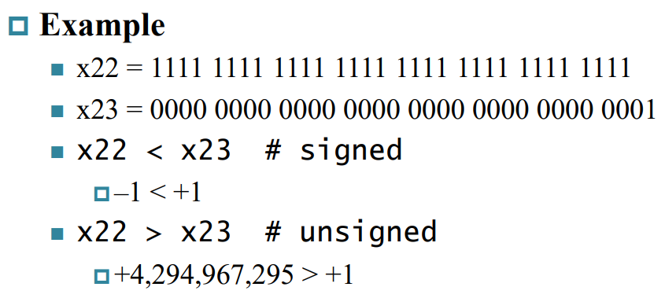
AL 3: Jump Register
RISC-V 中的无条件跳转主要包含两种指令：jal 和 jalr。
| Category | Instruction | Example | Meaning | Type |
|---|---|---|---|---|
| Unconditional branch | jump and link | jal x1, 100 |
x1 = PC + 4; go to PC+100 | UJ |
| Unconditional branch | jump and link register | jalr x1, 100(x5) |
x1 = PC + 4; go to x5+100 | I |
这之中 PC 的意思是当前指令的地址。实际上，所有指令都存储在内存之中（后面会再讲）。这里跳实际上也是一种「在内存里跳」。注意每个指令的长度为 32 bits。
jal 可以理解为相对位置跳转，jalr 可以理解为绝对位置跳转。
-
使用 Jump address table 来指导跳转
考虑这样的 C 代码，其中 $f\sim k$ 存储在 x20 ~ x25 中。
1switch ( k ) { 2 case 0 : f = i + j ; break ; /* k = 0 */ 3 case 1 : f = g + h ; break ; /* k = 1 */ 4 case 2 : f = g - h ; break ; /* k = 2 */ 5 case 3 : f = i - j ; break ; /* k = 3 */ 6}其 RISC-V 指令如下：
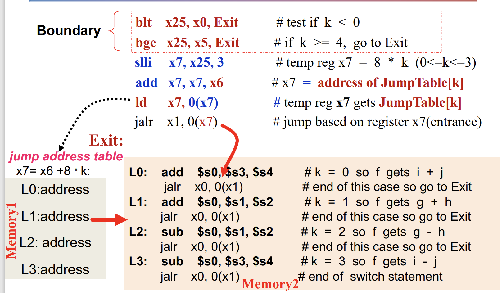
从内存中的 x6 开始一段，存储着我们用来辅助跳转的 Jump address table。第四行根据 $k$ 的值，将目标的精确 address 在内存中的存放位置赋给 x7。第五行执行后则 x7 获得了目标指令的 address（其实就是在内存 text 段的 address）。最后通过第六行跳转到对应指令。
Supporting Procedures
本部分进一步讲解 jal, jalr, bne, beq 这类能搞跳转的指令。
-
指令的存储
在将指令的存储前，首先讲内存的架构。
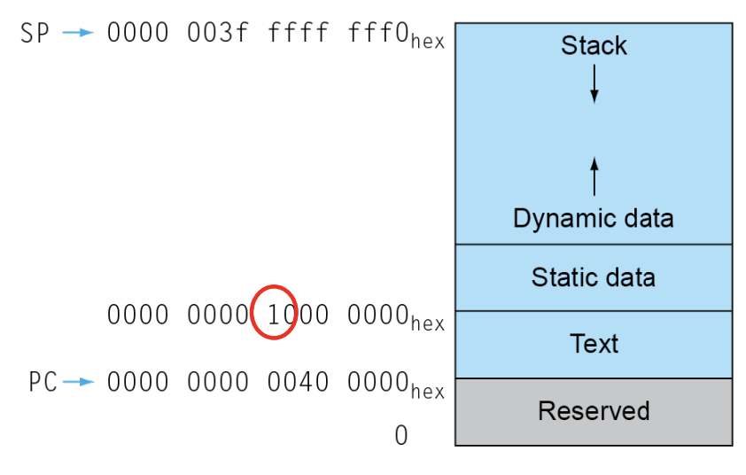
从下到上依次为：
- Reserved 此部分保留。
- Text 此部分 用于存储指令。之前看到指令的跳转也是以 byte 为单位的，这是因为它在内存之中，而内存的寻址亦为 byte 单位。
- Static Data 静态数据。这部分很好理解。
- Dynamic Data 动态数据。这部分很好理解。
- Stack 堆栈。这部分后面会讲，通常用于暂存一些 reg 中需要用到的量。
-
常见的 Procedure Call 流程
首先是 Caller。其指令一般为
jal x1, ProcedureAddress。注意此语句后， x1 中会 自动存放下一段指令的地址（即 PC + 4）。然后是 Callee。其指令一般为
jalr x0, 0(x1)。可以看到我们直接跳到(x1)，因为在跳之前x1已被赋好了值；此外第一个 operand 为x0是因为我们不关心 callee 的地址，只用返回去即可（即没有必要存储 callee 的地址）。 -
堆栈
在指令跳转的途中，有可能我们后面希望跳回来，但同时也希望跳之前 Caller 使用的部分 reg 得以保留。通常这是很难做到的，所以我们使用堆栈来先将 Caller 使用的寄存器的值保存下来，Callee 使用寄存器后再复原，以便接下来 Caller 再使用。
首先再次明确 RISC-V 寄存器的变量区域划分，同时我们也重新做一些记号：
Category Notation Register Arguments a0 ~ a7 x10 ~ x17 Saved s0 ~ 11 x8 ~ x9, x18 ~ x27 Temporary t0 ~ t6 x5 ~ x7, x28 ~ x31 可以这样理解各类变量：比如在调用一个递归的 C 函数
f(k)时，$k$ 和 $f(k)$ 的返回值都可以视作 Argument；而其中运算的中间值，递归完回来还要用的可视作 Saved；其中运算的中间值，递归完回来不用，仅仅作为中间运算结果的，可以视作 Temporary。之前讲到堆栈是地址最高的。同时，堆栈的 top 也是地址更低的。如下图所示。
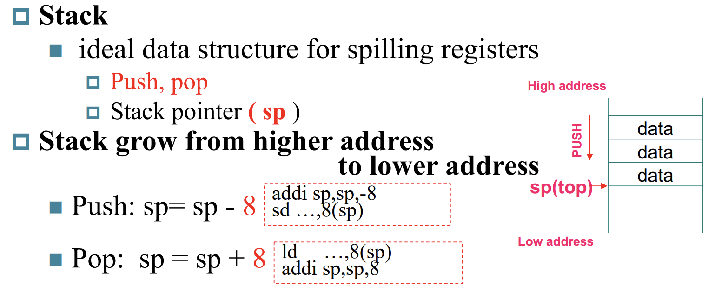
考虑这样一个例子：C 代码实现递归阶乘
1int fact ( int n ) { 2 if ( n < 1 ) return ( 1 ) ; 3 else return ( n * fact ( n - 1 ) ) ; 4}其 RISC-V 汇编代码如下：
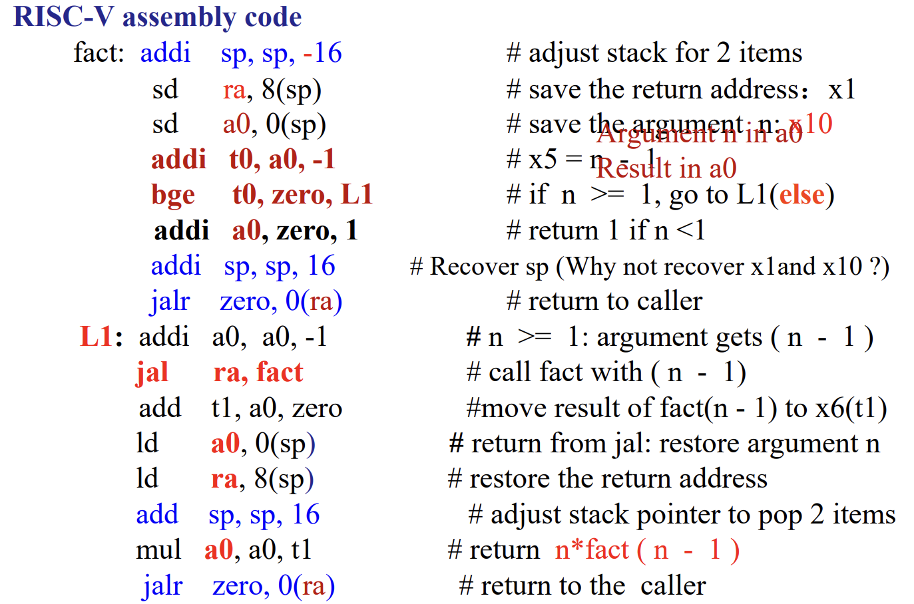
Line 1-3 开了两个栈空间，并把
ra和a0（对应 x10，一般用于存储输入参数和输出结果）存入堆栈。Line 4-5 在比较 $n$ 和 $1$ 的关系。
-
如果 $ n \leq 1$，进入
L1(Line 9)。注意到 Line 9 首先将a0减了一以便开始下一层递归（这也是为什么开始要把a0存进堆栈）；Line 10 则跳转到fact(Line 1)，此行指令也会把ra的值改变（这也是为什么开始要把ra存进堆栈）。 -
执行完 $fact(n-1)$ 后，回到 Line 11。此时
a0已然是递归后 $fact(n-1)$ 的结果，先把它转入t1临时变量中。随后读取之前存好的a0和ra，读取之后a0就是当前进程的 argument（即 $n$），ra就是要回去的 Caller 地址。Line 15 使得
a0变身 result 为一会儿返回的 caller 服务。Line 16 跳回 Caller。
SUMMARY
一般而言，caller 要对 temporary / argument 寄存器负责。即根据自己的情况决定这两类数据是否要存储到堆栈中。
而 callee 则对 saved 寄存器和 ra 负责。按照约定，在使用 saved 寄存器前，callee 必须先将 saved 中的变量存入堆栈；此外，callee 在执行指令前必须先将 ra 存入寄存器来确保待会儿能重返 caller。
-
Other Width
之前说的 load / store 都是以 dword 为单位的（指令为 ld 和 sd）。实际上也可以读写 byte / halfword / word。例如，要 load byte / halfword / word 的格式则为
lb rd, offset(rs1)
lh rd, offset(rs1)
lw rd, offset(rs1)
ML 2: Addressing for 32-Bit Immediate and Addresses
这部分讲解 32 位立即数赋值 / 32 位寻址的机器码层面具体实现。
-
32-Bit Immediate Addressing (U-Type)
指令
lui：将一个 register 的高 20 位设为常值。Category Instruction Example Meaning Type Data transfer Load upper immediate lui x5, 0x12345x5 = 0x12345000, Loads 20-bits constant shifted U 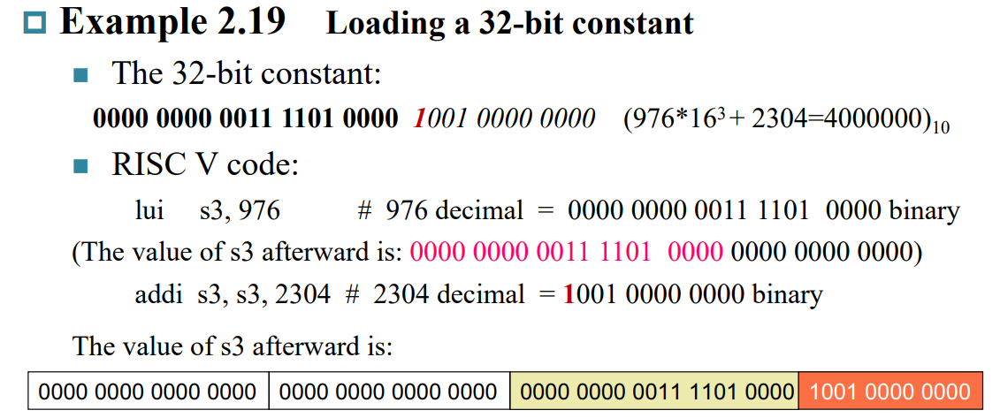
实际上的 RISC-V reg 是 64 位的。在这里我们对低 32 位赋予立即数。之所以要分两次赋予常值是因为一次的大小不够。
-
Branch Addressing (SB-Type)
上回说到 bne 的格式是
bne rs1, rs2, L1其中L1是某个标签，表示了某处的指令。然而实际上机器肯定无法识别L1，所以实际上这里 L1 翻译成机器码是一个 offset。举例：
bne x10, x11, 2000（2000 = 0111 1101 0000）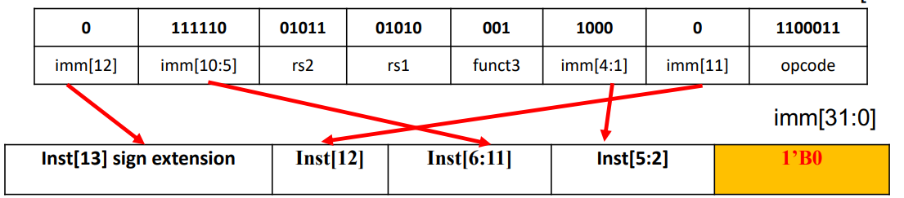
上图的 Inst 那一行有些神金，首先一般不用 Inst 表示（就用 imm），然后应该最低位从 0 开始。
注意，由于所有的 RISC-V 指令都是 32 位的（本课程不讨论 16 位），所以指令的地址（byte 单位）一定满足末两位为 0。所以 RISC-V 的设计者决定在实际机器编码时，省略 offset 的最后一位，只将 offset 中的非 LSB 部分写入机器码（这样可以使 offset 支持更远的距离）。
-
Jump Addressing (UJ-Type)
考虑
jal指令，其指令格式为 UJ 型。举例：
jal x0 2000，表示跳转到 $\text{offset} = 2000_{(10)}$ 的位置，没有向ra中存入内容。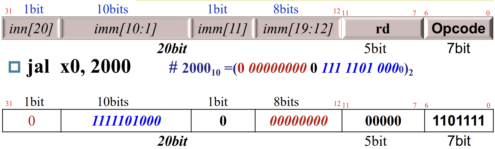
其中 2000 (offset) 存储在 imm 部分；x0 存储在 rd 部分，表示的是某个寄存器地址。
注意其中
imm[20] (inst[31])表示的是 符号位。当其为 $1$ 实际上是往之前的指令跳。此外，和 Branch Addressing 一样，offset 的最后一位不再反映到机器码中，默认 offset 的最后一位一定为零。
-
An Example: C $\to$ Assembly $\to$ Machine
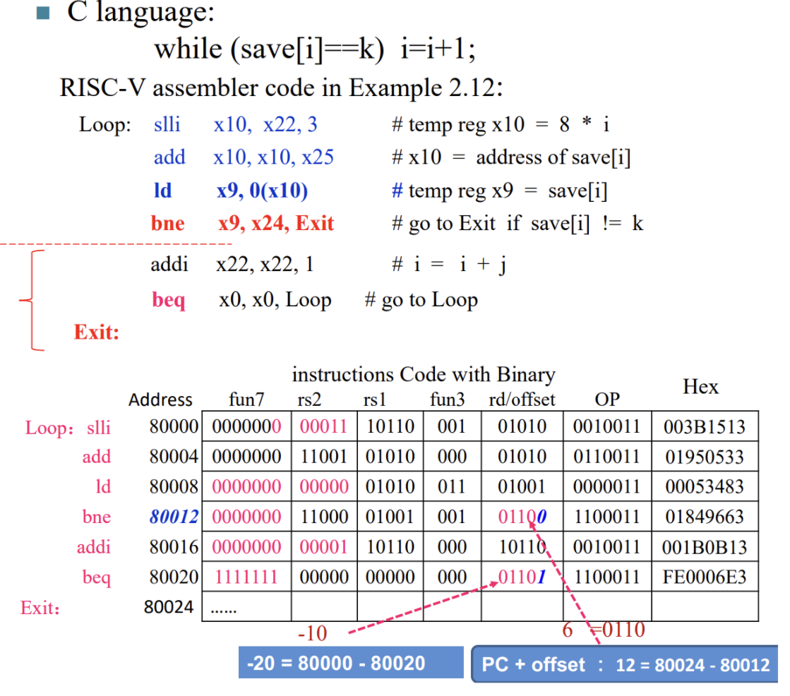
解读 bne 那一行：rs1 表示的是 x9，rs2 表示的是 x24。对于 SB-Type 指令，funct7 和 rd 列共同组成了 immediate。可以看到本指令的立即数为
000000000110(0)（最后一个 0 在机器码中被省去），对应的就是 +12。而我们看到 bne 和 Exit 差 3 条指令，即为 12 Bytes。
SUMMARY
个人感觉指令基本上是按「格式」分类，而不是「作用」分类。
-
R 型：主要用于「算术操作」。rd 表示被赋值寄存器，rs1 和 rs2 表示操作数。
-
I 型：目前可用于「load」「立即数算术」「jalr」。load 和 jalr 的共同点是都有一个基地址 rs1，同时有一个偏移量 imm。随后它们的 rd 都会改变，load 会把内存中读到的值放进 rd，jalr 会把 PC+4 放进 rd。
-
SB 型：目前可用于「选择型跳转」。rs1 和 rs2 执行某种比较运算，跳转的偏移量存储在 imm 中。
-
UJ 型：目前可用于「jal」。jal 只有一个偏移量 offset，同时也会把 PC+4 放进 rd。
-
U 型：目前可用于「立即数赋值」。把 imm 放进 rd（取低 32 位）的高 20 位。
-
S 型：目前可用于「store」。store 会把 rs2 寄存器中的内容写入基地址 rs1，偏移量 imm 的位置。
可以看到，rs1 / rs2 / rd / imm 都是有其意义的。
-
imm 通常表示常量，所以也经常表示 offset。注意 imm 的「上下界」（比如
imm[31:12]）有其意义。大概是，如果 imm 用于表示某指令的 X 部分，则imm[a:b]表示 imm 部分表示的是X[a:b]。 -
rs1 通常表示基地址。也有的时候表示第一个操作数。
-
rd 通常是一个会被写入新内容的寄存器地址。
-
rs2 则通常表示第二个操作数。
Some Extensions of CH2
-
Synchronization in RISC-V (RISC-V 同步问题)
考虑同时有两个处理器 P1 和 P2 在读写同一块内存。如果不进行同步 (Synchronization) 则有可能产生冲突。
首先介绍两个新指令
lr.d，sc.d：Category Instruction Example Meaning Data transfer Load-Reserved Dword lr.d rd, (rs1)从内存中地址为 rs1 加载 8 个字节，写入 rd，并对内存 双字注册保留 Data transfer Store-Conditional Dword sc.d rd, rs2, (rs1)若内存地址 rs1 上存在加载保留，将 rs2 寄存器中的 8 字节数存入该地址，并向寄存器 rd 中存入 0；否则存入非 0 错误码 简单来说，
lr.d会对地址为rs1的内存打上标记。若在下次rs1被sc.d之前rs1没被动过，则sc.d成功执行并返回 $0$；反之（被动过）则sc.d返回 $1$。接下来介绍两个例子，通过
lr.d和sc.d来避免内存的读写冲突。-
Example 1. Atomic Swap
1again: lr.d x10, (x20) 2sc.d x11, (x20), x23 // X11 = status 3bne x11, x0, again // branch if store failed 4addi x23, x10, 0 // X23 = loaded value本段 RISC-V 指令实现了将寄存器 x23 和地址为 x20 的内存进行数值交换。注意如果 x11 非零说明
sc.d不成功，即一二行指令之间可能发生了 x20 又被其他处理器覆写的情况。这种情况我们重新到 again 开始 swap，保证所有操作是 atomic 的。 -
Example 2. Lock
1addi x12, x0, 1 // copy locked value 2again: lr.d x10, (x20) // read lock 3bne x10, x0, again // check if it is 0 yet 4sc.d x11, (x20), x12 // attempt to store 5bne x11, x0, again // branch if failTo unlock:
1sd x0, 0(x20) // free lockx12 中始终为 1。若 x20 为 1（表示锁住状态）则会一直在二三行之间循环，也就是指令被锁在这里了。如果要解锁则将 x20 设为 0（表示解锁状态），此时能顺利通过第三行。
通过第三行后，再次尝试对锁复位为 1。若复位成功，x11 为 0，通过第五行，离开本部分指令；如果复位失败，x11 不为 0，说明二四行之间可能发生了 x20 被其他处理器覆写的情况，说明锁还不能松（其它进程在进行），需要回到 again 处重新循环上锁。
-
-
Translating and starting a program (程序的编写和执行步骤)
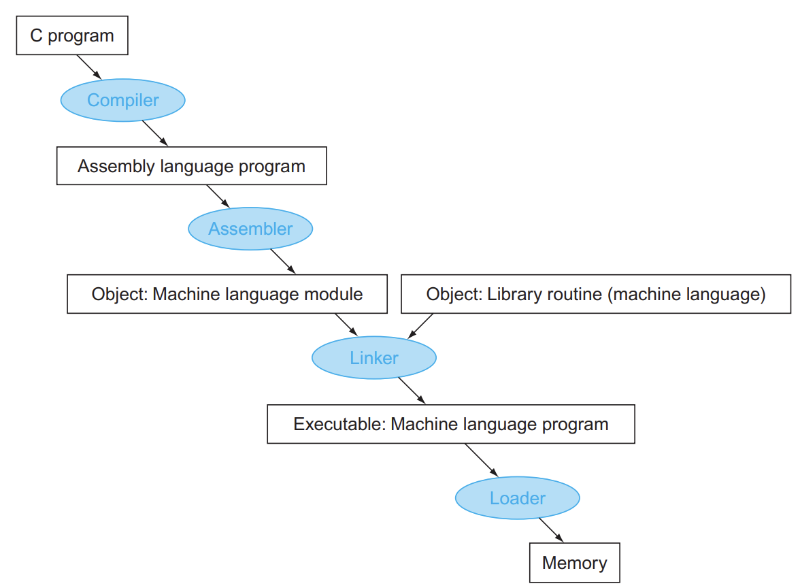
-
关于 obj 文件
object 文件由六部分构成：
- Header: described contents of object module
- Text segment: translated instructions
- Static data segment: data allocated for the life of the program
- Relocation info: for contents that depend on absolute location of loaded program
- Symbol table: global definitions and external refs
- Debug info: for associating with source code
一个例子如下，其中具有 A / B 两个程序的 obj 文件：
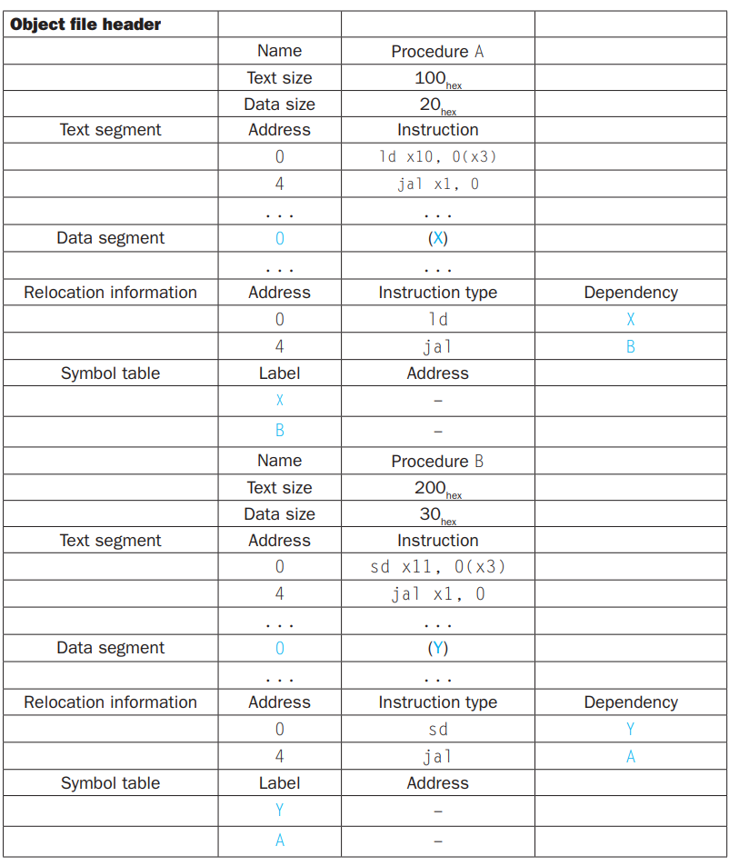
将其 Link 之后，生成 Executable 文件如下：
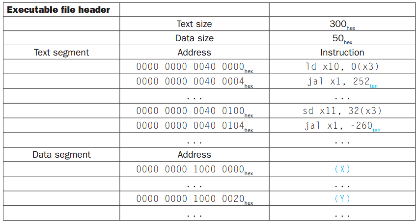
-
关于 Dynamic Linking & Lazy Linkage
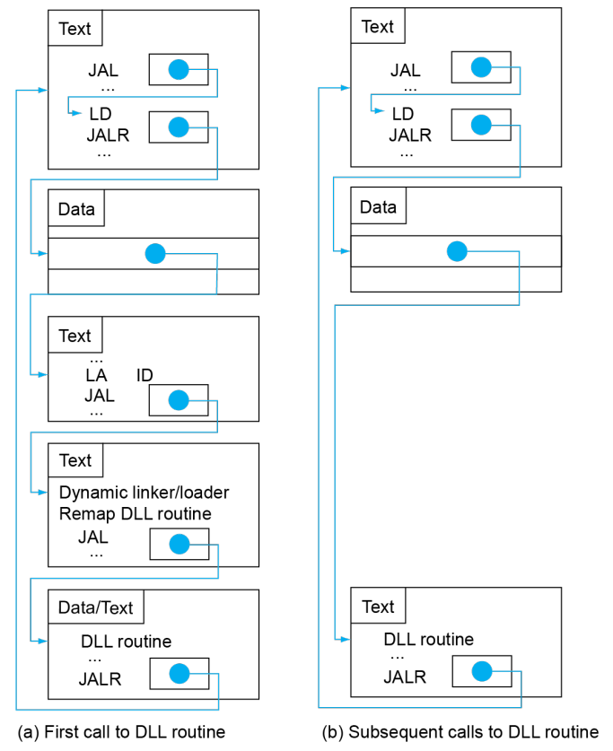
可以理解为，我在某个程序里调用了一个库函数 F，但实际上 F 的内容并没有被写入 Text 段，而是在其他位置。为了调用时跳转到该位置，我需要先在 Memory Data（记为 MD）中找到 DLL（动态链接库）的位置，然后跳过去；而后 DLL 会告诉我（为我分配）F 的准确位置，然后我再跳一次。是为 Dynamic Linking。
第二次调用库函数 F 时，MD 就已经存放了我要的 F 的位置了，直接就可以跳过去。是为 Lazy Linkage。
-
-
A C Sort Example To Put it All Together
见讲义。一个主要思想是，把 C 转化成汇编语言的范式：
Step 1. Allocate registers to program variables
Step 2. Produce code for the body of the procedures
Step 3. Preserve registers across the procedures invocation